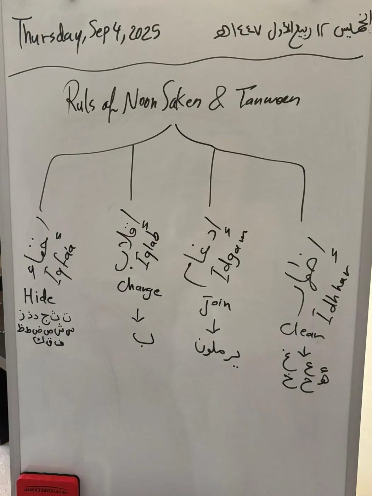
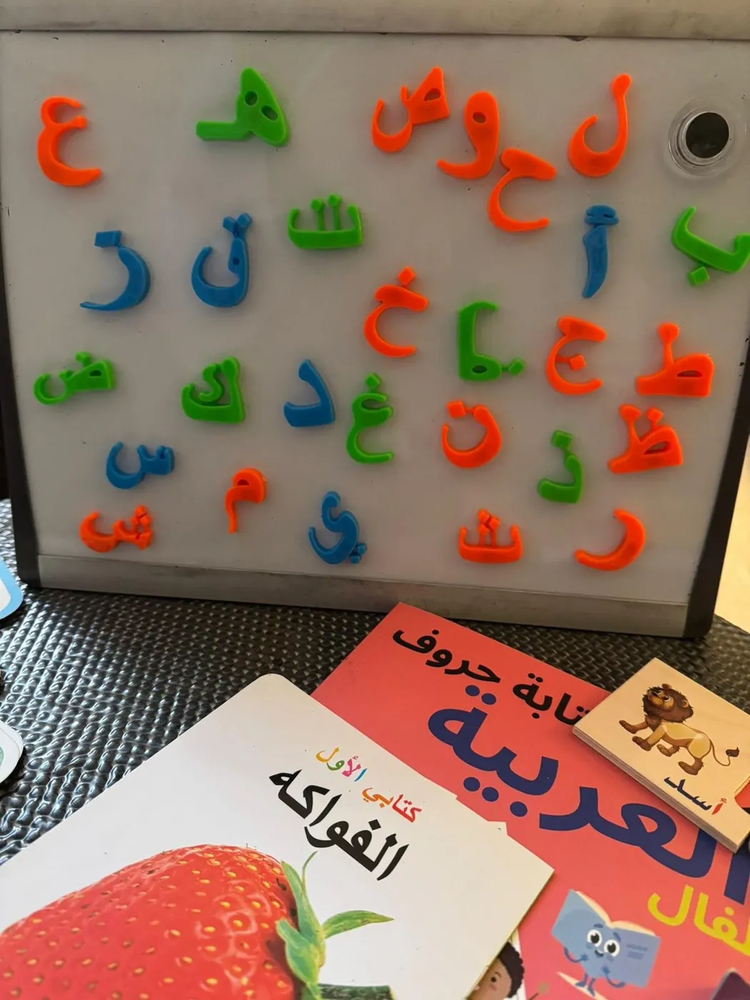
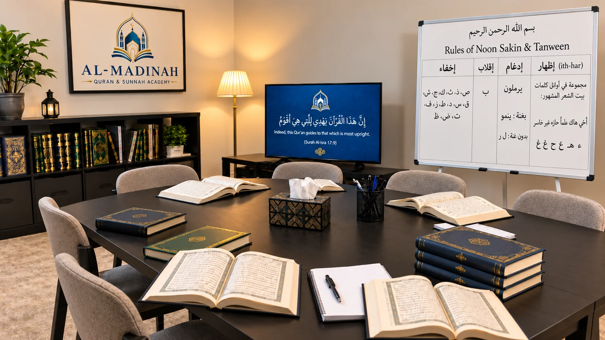
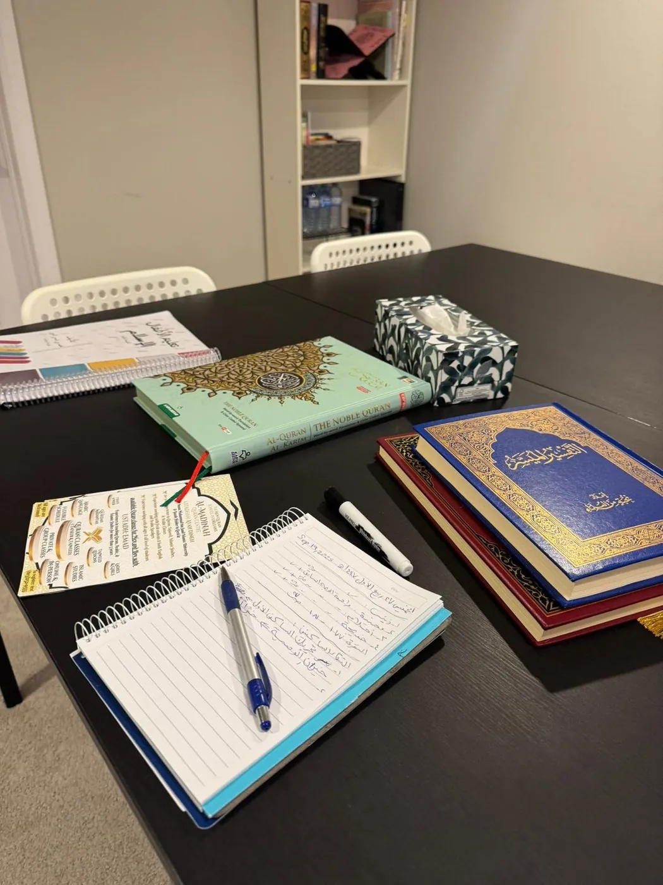
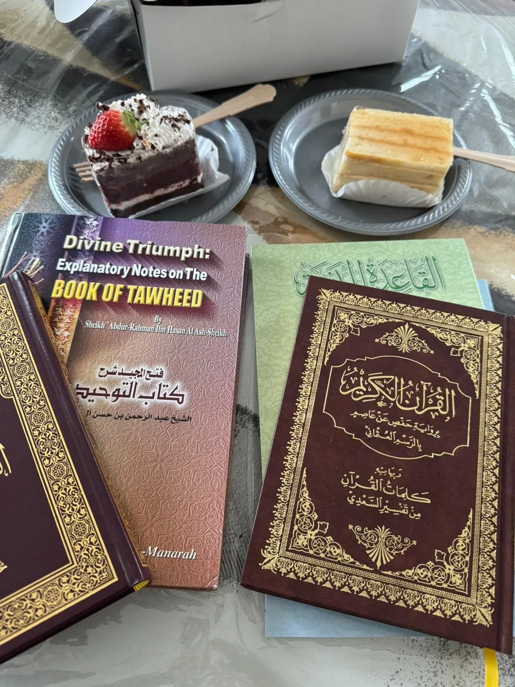
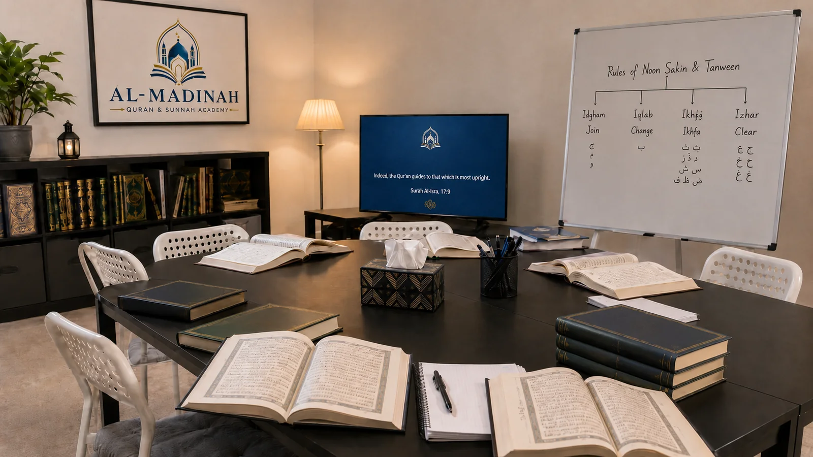

Student Life
A learning environment with beauty, order, and care.
A look at the spaces, materials, classroom rhythm, and family support behind the academy experience.








Class Rhythm
Simple rhythm, steady results.
A predictable lesson flow helps students feel settled while keeping the class purposeful.
Settle
Students begin with focus, respect, and clear expectations.
Review
Previous material is revisited before new learning begins.
Learn
New concepts are taught in manageable steps.
Practice
Students repeat, recite, write, answer, and receive correction.
Anchor
The lesson closes with a clear next step for continued progress.
For Families
Parents stay connected to the learning path.
The academy works best when parents understand the student’s level, goals, and next step. Communication stays simple and practical.

Atmosphere
A calm space makes serious learning easier.
The academy’s visual identity, classroom setup, and materials are intentionally refined so students feel that Islamic learning deserves excellence.